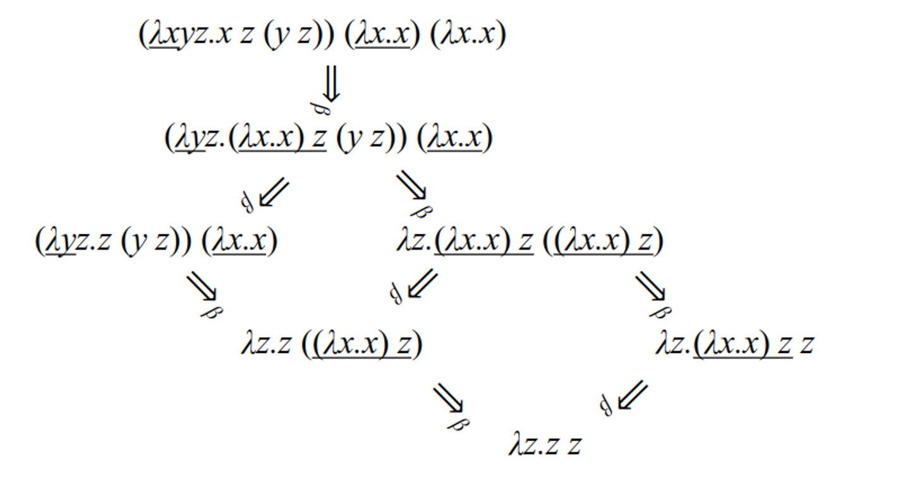

Lambda calculus is a system of logic to study computations with functions, where everything is a function
More specifically, it’s a system for representing functions abstractly, where $\lambda M.N$ is a function with parameters $M$ and body $N$
Example:
$ \lambda x y z . x \, z \, (y \, z) = (\lambda x . (\lambda y . (\lambda z . (x \, z) \, (y \, z)))) $
We can bind a variable to a value with $\lambda x.M$, which binds $x$ to $\lambda x.M$
We can use free(M) to fetch the set of free variables in $M$
In order to compute with pure $\lambda$ terms, we can reduce the terms as simply as possible, prioritizing the right-hand side
We do this in a general form like so: $(\lambda x.M)N =_{\beta}{N/x}M$ or, put simply, subtitute N for x in M
For example, we can do the following
\[(\lambda xy.x)uv =_{\beta} (\lambda y.u)v =_{\beta}u\]In order to do this accurately, we need to make sure that ${N/x}M$ does not bind any variables that were previously free, so we must make sure that $free(N) \cap bound(M)=\emptyset$
Example
$ \lambda y . \lambda z . x \, z \, (y \, z) $
For example, let’s say we have the following expression
\[(\lambda xy.xy)y\]We can expand this out like so
\[(\lambda x.\lambda y.xy)y\]Now, if $y$ is local then we can simplify, but $y$ could be bound, so we must substitute
\[(\lambda x.\lambda z.xz)y\]Now we can evaluate
\[=_{\beta}\lambda z.yz\]Substitution comes with some more rules as well
You may have noticed a little subscript on our equals signs; this signifies beta-reduction, which applies an abstraction to an argument
There’s also alpha-conversions, which renames formal parameters
We can combine these to reduce more complex statements
Example
\[(\lambda x y z . x \, z \, (y \, z)) \, (\lambda x . x) \, (\lambda x . x) \Rightarrow_{\alpha} (\lambda x y z . x \, z \, (y \, z)) \, (\lambda u . u) \, (\lambda x . x) \Rightarrow_{\alpha} (\lambda x y z . x \, z \, (y \, z)) \, (\lambda u . u) \, (\lambda v . v) \Rightarrow_{\beta} (\lambda y z . (\lambda u . u) \, z \, (y \, z)) \, (\lambda v . v) \Rightarrow_{\beta} (\lambda y z . z \, (y \, z)) \, (\lambda v . v) \Rightarrow_{\beta} \lambda z . ((\lambda v . v) \, z) \Rightarrow_{\beta} \lambda z . z\]Another example:
Example
\[(\lambda f g h . f \, g \, (h \, h)) \, (\lambda x y . x) \, h \, (\lambda x . x \, x) \Rightarrow_{\beta} (\lambda g h . (\lambda x y . x) \, g \, (h \, h)) \, h \, (\lambda x . x \, x) \Rightarrow_{\alpha} (\lambda g k . (\lambda x y . x) \, g \, (k \, k)) \, h \, (\lambda x . x \, x) \Rightarrow_{\beta} (\lambda k . (\lambda x y . x) \, h \, (k \, k)) \, (\lambda x . x \, x) \Rightarrow_{\beta} (\lambda x y . x) \, h \, ((\lambda x . x \, x) \, (\lambda x . x \, x)) \Rightarrow_{\beta} (\lambda y . h) \, ((\lambda x . x \, x) \, (\lambda x . x \, x)) \Rightarrow_{\beta} h\]Now, of course, there’s many ways to go about this (in line 2, we could’ve applied $\lambda xy.x$ to $g$, but it’s usually best to go from the outside in)
Once we get to a form that can’t be beta-reduced, we call this normal form, like $\lambda x.x.x$
There’s many ways to get to this form, but if it exists, you will find it eventually

Note that some reductions go into an infinite loop and thus can’t be reduced
\[(\lambda x.x.x)(\lambda x.x.x) \Rightarrow_{\beta}(\lambda x.x.x)(\lambda x.x.x)\]The question becomes this: is there only one normal form? Yes!
The theorem goes that for all pure $\lambda$-terms $M,P,Q$, if $M$ can be reduced to $P$ and can be reduced to $Q$, $P$ and $Q$ can both be reduced to $R$, so overall $M$ reduces to $R$
This essentially states that normal forms, when they exist, are unique, which makes functional programming possible in the first place
In order to reduce, we can either call by value (applicative order - parameters are evaluated then passed) or call by name (normal order - parameters are passed unevaluated)
Call-by-value: this might never reduce…
Example
\[(\lambda y . h) ((\lambda x . x \, x) (\lambda x . x \, x)) \Rightarrow_{\beta} (\lambda y . h) ((\lambda x . x \, x) (\lambda x . x \, x)) \Rightarrow_{\beta} (\lambda y . h) ((\lambda x . x \, x) (\lambda x . x \, x)) \Rightarrow_{\beta} \ldots\]Example Call-by-name: now we can reduce!
\[(\lambda y . h) ((\lambda x . x \, x) (\lambda x . x \, x)) \Rightarrow_{\beta} h\]Most programming languages will have boolean values true and false, but we can hack together a way to implement this
\[T =\lambda x.\lambda y.x \\ F =\lambda x.\lambda y.y\]With this, we can form a way to pick a value from a pair
Example
\[((T \, P) \, Q) \Rightarrow_{\beta} (((\lambda x . \lambda y . x) \, P) \, Q) \Rightarrow_{\beta} ((\lambda y . P) \, Q) \Rightarrow_{\beta} P\] \[((F \, P) \, Q) \Rightarrow_{\beta} (((\lambda x . \lambda y . y) \, P) \, Q) \Rightarrow_{\beta} ((\lambda y . y) \, Q) \Rightarrow_{\beta} Q\]From here, we can create boolean functions which form our logic gates
Interpretation is consistent with predicate logic:
\[\text{not} \, T \Rightarrow_{\beta} (\lambda x . ((x \, F) \, T) \, T \Rightarrow_{\beta} ((T \, F) \, T) \Rightarrow_{\beta} F\] \[\text{not} \, F \Rightarrow_{\beta} (\lambda x . ((x \, F) \, T) \, F \Rightarrow_{\beta} ((F \, F) \, T) \Rightarrow_{\beta} T\]Now we’re starting to form something special: a language that we can use to do practical calculations!
0 ≡ λf.λc.c
1 ≡ λf.λc.(f c)
2 ≡ λf.λc.(f (f c))
3 ≡ λf.λc.(f (f (f c)))
…
N ≡ λf.λc.(f (f … (f c))…) // N times
Interpretation:
Here, we use the successor model to build integers off of each other, so 1 is the successor of 0, 2 is the successor of 1, etc.
We can also perform computations like so
Integers (cont’d), Example calculations:
\[(N \, a) = (\lambda f . \lambda c . (f \, (f \, ... (f \, c))...)) \, a \Rightarrow_{\beta} \lambda c . (a \, ... (a \, c)...) \quad \text{(N times)}\] \[((N \, a) \, b) = (a \, (a \, ...(a \, b)...)) \quad \text{(N times)}\]Addition:
$ + \equiv \lambda M . \lambda N . \lambda a . \lambda b . ((M \, a) ((N \, a) \, b)) $
\[[M + N] = \lambda a . \lambda b . ((M \, a) ((N \, a) \, b)) \Rightarrow_{\beta}^* \lambda a . \lambda b . (a \, (a \, ...(a \, b)...) \quad \text{(M + N times)}\]Multiplication:
$ \times \equiv \lambda M . \lambda N . \lambda a . (M \, (N \, a)) $
\[[M \times N] = \lambda a . (M \, (N \, a)) \Rightarrow_{\beta}^* \lambda a . \lambda b . (a \, (a \, ...(a \, b)...) \quad \text{(M \times N times)}\]Exponentiation:
$ \wedge \equiv \lambda M . \lambda N . (N \, M) $
\[[M^N] = (N \, M) \Rightarrow_{\beta}^* \lambda a . \lambda b . (a \, (a \, ...(a \, b)...) \quad \text{(M^N times)}\]if ≡ λc.λt.λe.c t e
Example:
if T 3 4
\[(\lambda c . \lambda t . \lambda e . c \, t \, e) (\lambda x . \lambda y . x) \, 3 \, 4 \Rightarrow_{\beta}^* (\lambda t . \lambda e . t) \, 3 \, 4 \Rightarrow_{\beta}^* 3\]if F 3 4
\[(\lambda c . \lambda t . \lambda e . c \, t \, e) (\lambda x . \lambda y . y) \, 3 \, 4 \Rightarrow_{\beta}^* (\lambda t . \lambda e . e) \, 3 \, 4 \Rightarrow_{\beta}^* 4\]We can also model recursion, but this is where things get complicated
You see, in order to do recursion the naive way, we would have a recursive function on both the left hand side and right hand side, but substitution here, the definition just gets bigger for infinity
What we can do is just use beta-abstraction to abstract away the right hand side into its own function
$ \text{gcd} = \lambda a . \lambda b . (\text{if} (\text{equal} \, a \, b) \, a \, (\text{if} (\text{greater} \, a \, b) (\text{gcd} (\text{minus} \, a \, b) \, b) (\text{gcd} (\text{minus} \, b \, a) \, a))) $
This is what we call the fixed point combinator, or Y-combinator, where if $Yf$ reduces to normal form, then $f(Yf)$ reduces to the same normal form
This is essentially a general form of what we had earlier
Applied to gcd, it can be used to abstract further
operations for lists:
Here, cons is a list, car is the head, cdr is the tail and null checks for an empty list
cdr (cons A B)
≡ (λl.l select_second) (cons A B)
⇒ᵦ (cons A B) select_second
≡ ((λa.λd.λx.x a d) A B) select_second
⇒ᵦ* (λx.x A B) select_second
⇒ᵦ select_second A B
≡ (λx.λy.y) A B
⇒ᵦ* B
While languages like C++ operate imperatively and can be quite complex, functional languages like Scheme and Haskell are rooted in lambda calculus. Understanding lambda calculus allows you to write code more intuitively in these languages.
Although these languages do have their limitations, they offer intriguing insights and could lead to more practical applications in the future. The key is to think abstractly. Mastering this concept empowers you to tackle any problem.